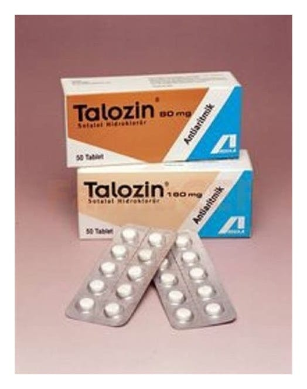

Talozin 160 mg 50 Tablet

Ne için kullanılır
KT · Bölüm 1TALOZİN, beyaz kokusuz tablettir ve beta-blokerler olarak bilinen bir ilaç grubuna dahildir.
TALOZİN, 50 tabletlik PVC/Al folyo blister ambalajlarda satılmaktadır.
TALOZİN kalp karıncıklarından (kalbin alt odacıkları) kaynaklanan ve kalp çarpıntılarına yol açan kalp ritmi bozukluğu olan hastalarda kalbin normal şekilde atmaya devam etmesini sağlamak için kullanılır. TALOZİN ventriküler taşikardi (kalp atım hızının artması) veya ventriküler fibrilasyonlu (ventrikül kasının çok hızlı ve düzensiz kasılması) hastalarda kullanılır.
Kalbin karıncıklarının üst bölümünden kaynaklanan ve kalp ritminin hızlanmasına yol açan tedavi gerektiren kalp ritmi bozukluklarının (semptomatik ve tedavi gerektiren taşikardi özelliği taşıyan supraventriküler kalp ritmi bozuklukları) tedavisinde de kullanılır.